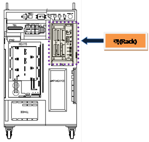

이전 작업 프로그램을 보호하기 위해서 보드를 랙에서 제거하기 전에 반드시 메인보드의 모든 파일을 SRAM 카드로 백업하시기 바랍니다.
19.1. 개요
메인에서 서보에 모터 ON 지령을 보냈는데도 서보가 모터 ON 되지 않는 경우에 발생합니다.
메인과 서보간의 통신에 문제가 있을 경우에 발생할 수 있습니다.
메인에서 서보에 모터 ON을 보내기 직전에 서보에러 clear 지령을 보내고 서보에러가 clear되면 모터 ON 지령을 보냅니다. 서보에러가 clear되지 않으면 해당 서보에러가 다시 나타나기 때문에 모터 ON 지령이 출력되지 않습니다. 따라서 메인과 서보간 통신 문제만 아니라면 정상적인 모터 ON이 되거나 다른 서보 에러가 발생됩니다.
19.2. 원인 및 점검방법
|
1. 메인보드와 서보보드가 올바로 설치되어 있는지 점검하십시오. 1) 보드가 올바르게 설치되어 있는지 점검하십시오. 2) 보드 이상여부를 점검하십시오. |
1. 메인보드와 서보보드가 올바르게 설치되어 있는지 점검하십시오.
메인보드와 서보보드가 랙에 올바로 설치되어 있지 않거나 보드에 문제가 있으면 통신에 문제가 되어 에러가 발생할 수 있습니다.
|
경고(Warning) 이전 작업 프로그램을 보호하기 위해서 보드를 랙에서 제거하기 전에 반드시 메인보드의 모든 파일을 SRAM 카드로 백업하시기 바랍니다. |
1) 보드가 올바르게 설치되어 있는지 점검하십시오.
메인보드와 서보보드를 랙에서 제거한 후 다시 설치하시기 바랍니다.

그림 5.63 제어기 내부 랙 위치
2) 보드 이상여부를 점검하십시오.
보드 이상 여부를 판단하기 위해서 보드 교체를 하시기 바랍니다.